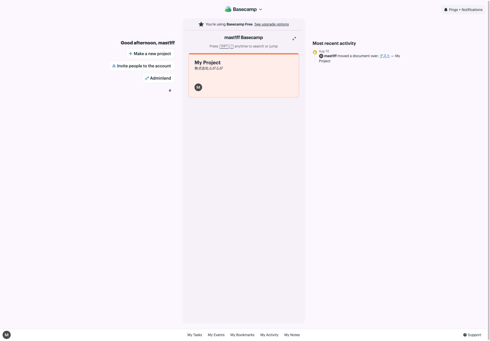
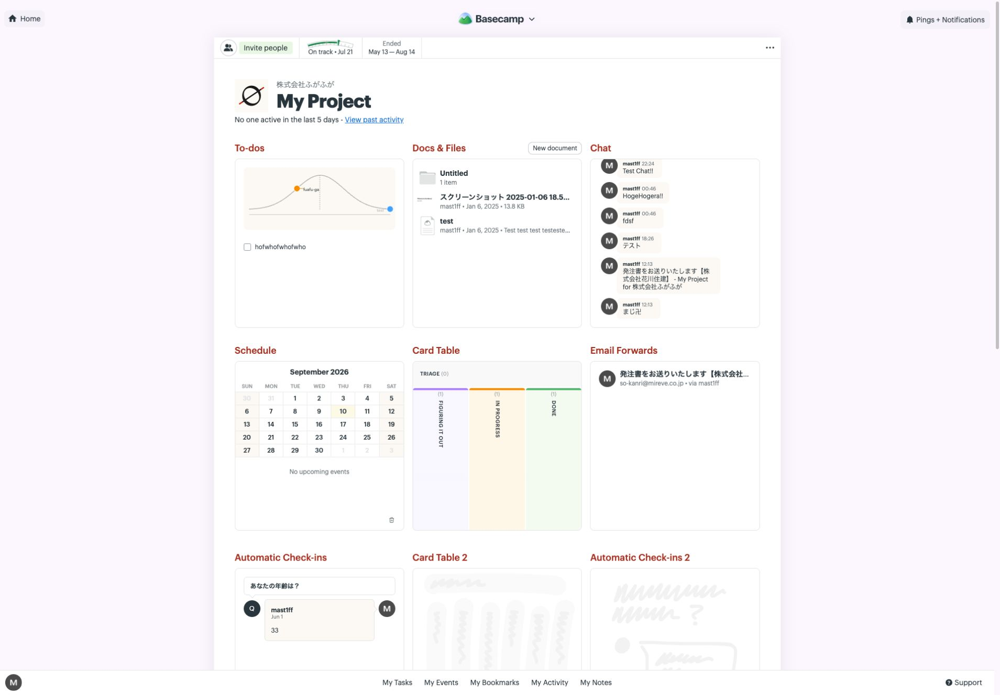
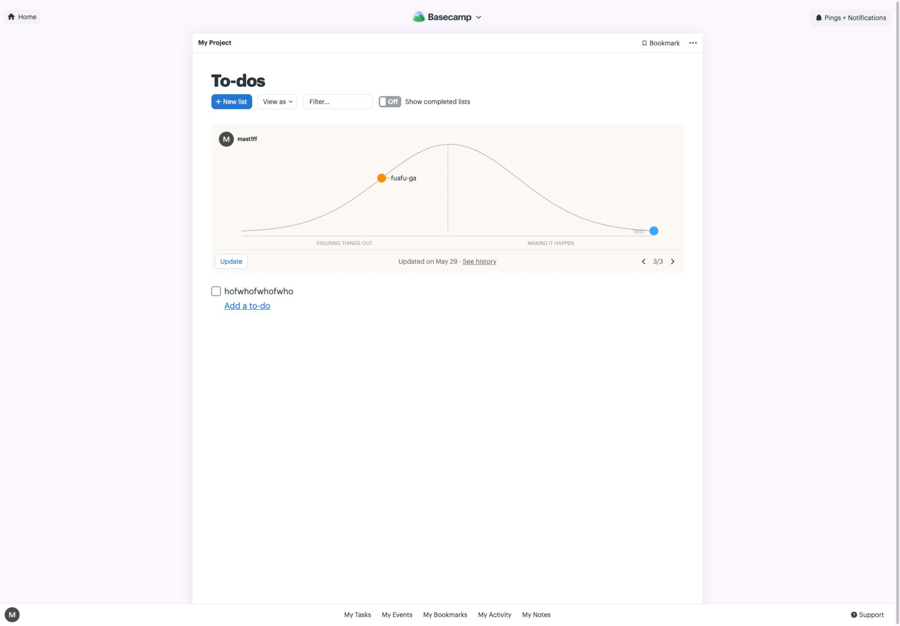
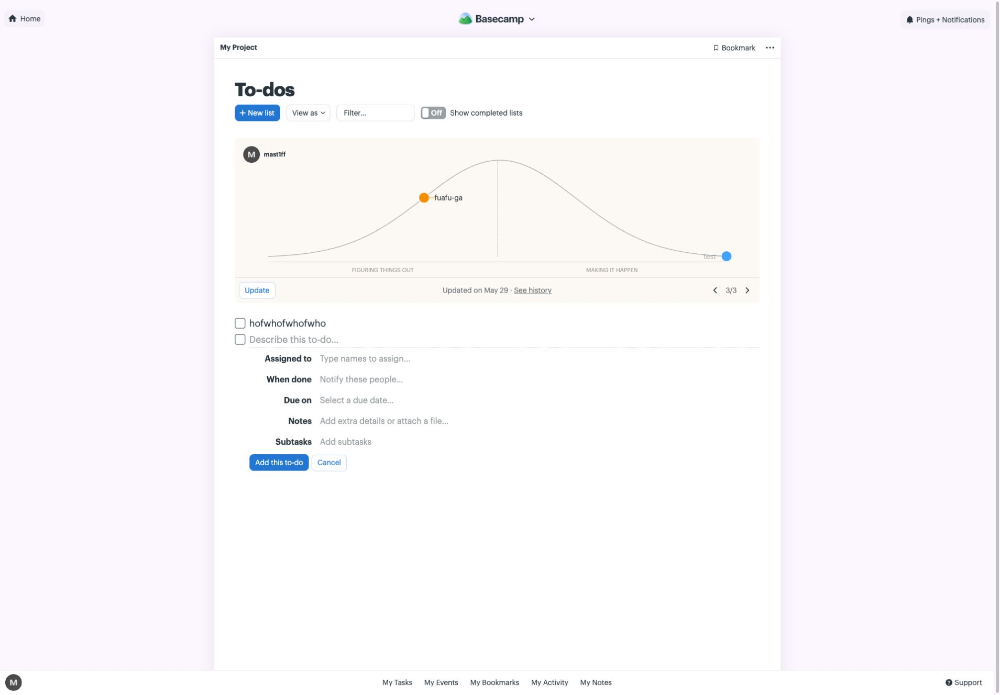
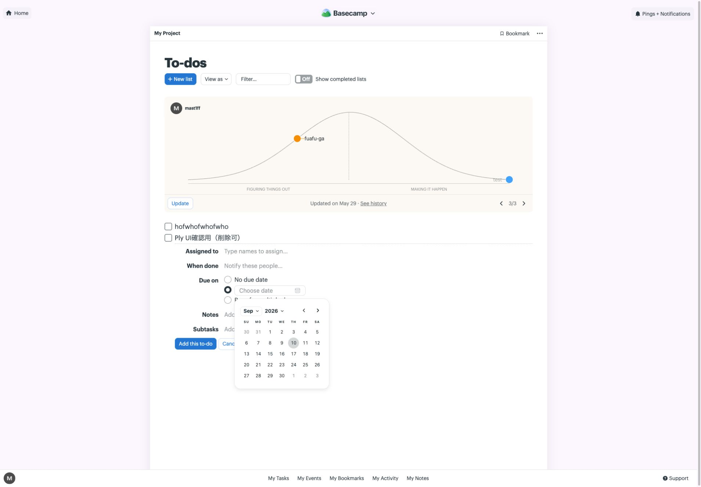
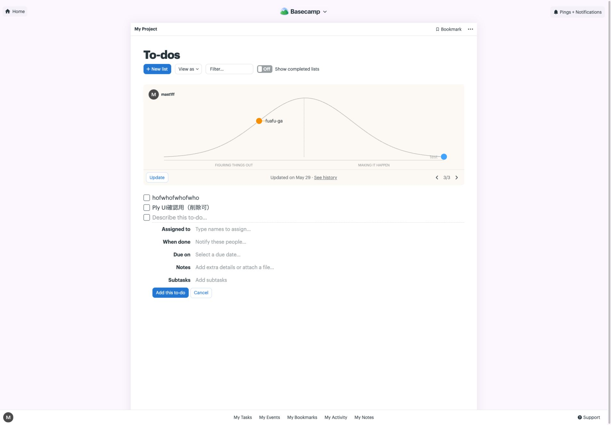
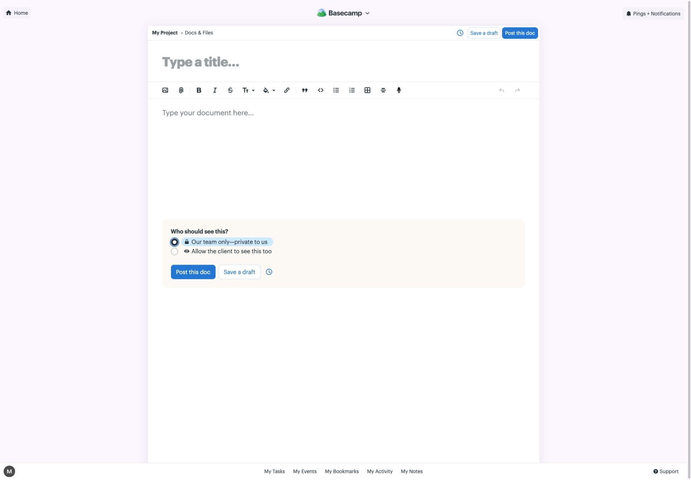
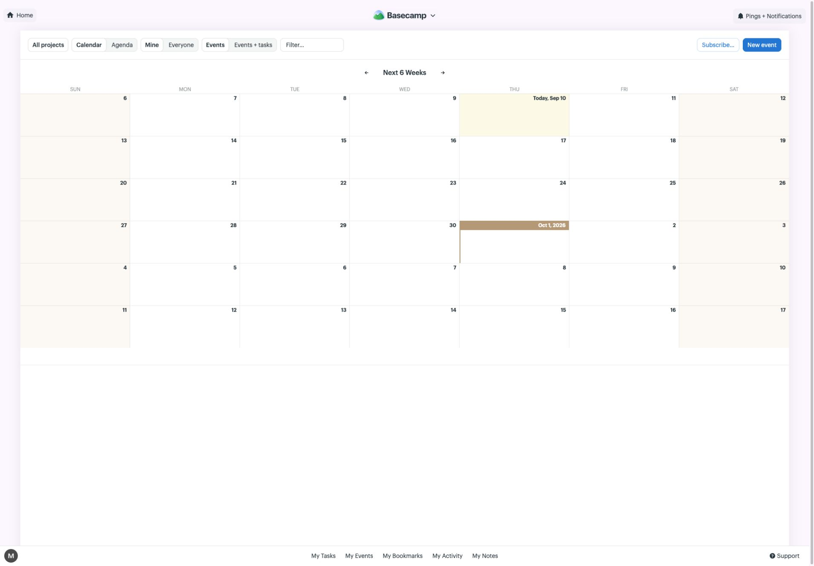
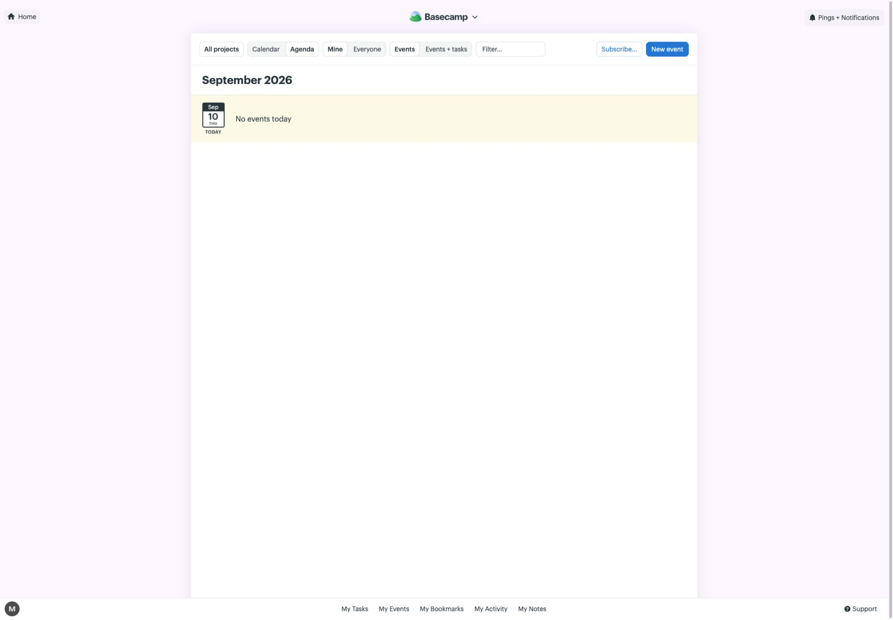

Basecamp ホーム
作成・プロジェクト・活動を別の領域に置く。

Basecamp プロジェクト
各道具に中身の異なるプレビュー。上部帯は招待・進捗・期間・メニュー。

Basecamp To-dos
追加・表示・検索を見出しの下に集め、現在位置は作業面の縁に置く。

Basecamp To-do追加
一覧の行から入力が展開。ラベルと値を横に並べ、主操作・取消を直下に置く。

Basecamp 期限の展開
期限なし・指定日・複数日を分け、日付選択をその場で開く。

Basecamp 追加後
追加した行を残し、次の入力欄へ進む。上部の位置は動かない。

Basecamp 文書作成
タイトル・本文・公開範囲。上部は小さな操作、下部は大きめの操作を使い分ける。

Basecamp Calendar
薄い土台と白い選択面。高さを抑えた切替を横にまとめる。

Basecamp Agenda
切替の位置と高さを保って内容を替える。全体の本文幅は表示に応じて変わる。